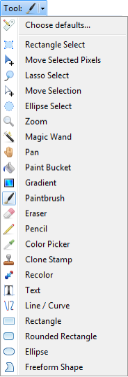
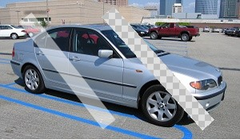

Toolbar
The toolbar contains buttons for accessing many common commands, controls for configuring how the image is viewed, and controls for configuring how many of the tools interact with the image.
Toolbar
Common Actions
Common Actions
These buttons allow you to quickly perform many common actions. From left to right, they allow you to create a new image, open an existing one, save, print, cut, copy, paste, crop, deselect, undo, and redo.
View Controls
View Controls
These controls allow you to modify how the image is presented to you. The first two buttons let you zoom in or out, while the dropdown list allows you to set a specific zoom level. You may also choose the "Window" zoom level, which causes the zoom level to be maintained such that the entire image is always visible (this is the same as selecting the View → Zoom to Window menu option).
The next two buttons toggle the visibility of the grid and the rulers, respectively. The last control lets you specify whether you wish to work with measurements in pixels, inches, or centimeters. This does not change the units that are stored in the image; you may change those using the Image → Resize menu command.
Tool Choice
Tool Choice
The second row of the toolbar starts with a button that lets you choose the current tool. If you click on this button you will be presented with a list of possible tools, as well as a command called "Choose defaults." Clicking on it will bring up the following dialog:
Choose Defaults
This dialog may be used to set all of the default toolbar item settings. You may also change which tool is made active when Paint.NET starts up. The "Reset" button will reset all of the values to the defaults, while "Load from Toolbar" will take the settings that are in the current toolbar and apply them to the settings in this dialog.
Previous versions of Paint.NET would automatically remember some settings in the toolbar between sessions, such as those for antialiasing and color tolerance. In version 3.0 and later, none of the toolbar settings are automatically remembered. If you want a toolbar setting to be remembered then you must manually change it through this dialog and then press the "Save" button.
Tool Configuration
After the Tool button, the rest of this row contains controls that let you adjust how the current tool operates. There will always be a combination of the toolbar controls from the "Choose Defaults" dialog shown above. Each section is discussed below.
Shapes, Brush, Style, and Fill
Shapes, Brush, Style and Fill

The Shape Tools use these controls. Here you can select if the shape should be drawn as a filled shape, outline, or both. The size of the brush stroke and the fill type can be adjusted as well. The Line/Curve tool also allows you to set the style, which includes start- and end-caps, as well as dash- or dot-pattern.
Selection Tools
Selection Tools
The "Selection Mode" section of the toolbar lets you choose the combine mode that the selection tools use. When you draw with a selection tool it will either replace any existing selection, add on to it, subtract away from it, or invert the area that intersects with what you are drawing.
The next section of this toolbar lets you choose between Normal (freehand), Fixed Size, and Fixed Ratio selection drawing for the Rectangle Select tool. The latter two modes can be useful when you want to crop an image to a specific size (e.g. 4" x 3") area or to a fixed ratio (e.g. 16x10).
Text
Text
This section of the toolbar is only used by the Text tool, and lets you configure the font family, size, style, and alignment.
Gradient
Gradient
The Gradient Tool has 5 different gradient types that can be rendered, and can also operate in either color mode or a special transparency mode.
Magic Wand, Paint Bucket, and Recolor
Magic Wand, Paint Bucket, and Recolor
The "Flood Mode" affects only the Magic Wand and Paint Bucket tools. If Flood Mode is set to Contiguous, then the selection or paint bucket fill will spread outward from where you click, and stop at colors that are not within the given tolerance. If the Flood Mode is set to Global, then the selection or paint bucket fill will be based on analysis of all pixels in the current layer, and will be done regardless of where you click.
The "Tolerance" slider affects how the Magic Wand, the Paint Bucket, and the Recolor tools operate. It controls how similar colors must be when being operated on by these tools. If this is set to 0%, then only the exact color specified will be considered. If this is set to 100%, then all colors will be included. The default value is 50%.
Color Picker
Color Picker
The Color Picker may be configured to switch to the Pencil tool or the previous tool after clicking on a color.
Move Selected Pixels
Move Selected Pixels
The Move Selected Pixels tool can be configured to use either "smooth" (bilinear) or "pixelated" (nearest neighbor) resampling. Smooth quality is usually preferable unless you have a specific need for pixelated quality.
Rasterization
Many tools are affected by one or both of these options which select how drawing is performed on a per-pixel basis. To use these split-buttons, you can either press on the icon to toggle the setting, or click on the arrow to open a menu describing the possible choices.
Rasterization
The first split-button controls whether antialiasing is used. The circle on the left was drawn with antialiasing enabled, whereas the one on the right was drawn with antialiasing disabled. It is noticeably more "jagged" in its appearance:
Example
The second split-button controls the type of blending. Normal blending applies what is known as "OVER" blending, where each pixel that is being drawn is blended into the pixel that is already on the layer. Overwrite blending applies what is known as "COPY" blending, where each pixel that is being drawn replaces any pixel that was already there. In the image below, a line was drawn twice with an alpha value of 128, which means it is approximately 50% transparent.
The line on the left was drawn with Normal blending, which is why it blended into the image of the car. Both the car and the line are visible where the line was drawn. The second line, on the right, was drawn using Overwrite blending. The half-transparent pixels replaced the existing pixels. The car is no longer visible where the line was drawn, and the checkerboard pattern is now visible which indicates that this portion of the image is now transparent.
Example
The Overwrite blending option can be especially useful with the Pencil tool when editing images at the pixel level.